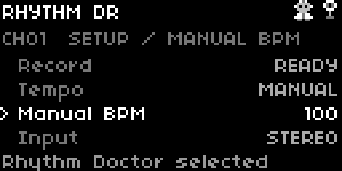
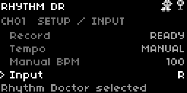
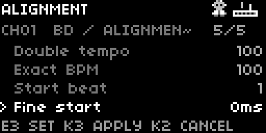
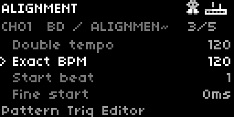
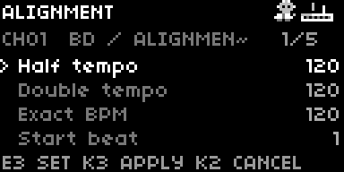
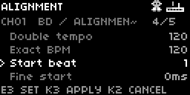
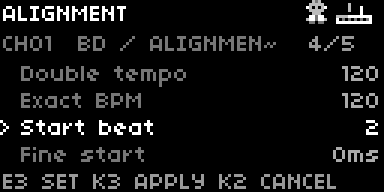
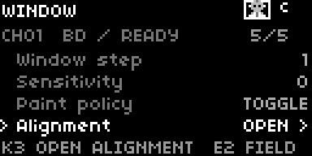
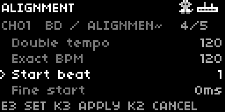

Rhythm Doctor: vertical lists
E2 selects a row and scrolls the list. E3 changes the selected value. The footer shows the available key actions.
This engineering recording passed its public controls, analysis, paint, MIDI and cleanup checks. Final seven-role qualification is pending.
These are actual native emulator screens, including the current miniature header. The Manual recording uses the right audio input. The Start beat sequence shows beat 1, beat 2, application and restoration.

Manual BPM
Select Manual tempo. Set Manual BPM to 100 with E3.

Input: R
Select Input. Choose R to record the right input on both capture channels.
Window: row 5 of 5
Turn E2 to Alignment. The list scrolls to reveal its last row.

Alignment: row 5 of 5
Turn E2 to Fine start. The footer shows K2 and K3 actions.

Edit, then cancel
Set Exact BPM to 120. Press K2 to discard this draft.
Edit, then apply
Open Alignment again. Set Exact BPM to 120 and press K3.

Confirmed tempo
After analysis, open Alignment. The bank now uses 120 BPM.

Start beat: 1
Select Start beat. The recording starts from beat 1.

Start beat: 2
Turn E3 one step. Press K3 to analyse from beat 2.

Beat 2 applied
Doctor returns to Window after analysing the same recording. The start moved by one beat.

Return to beat 1
Open Alignment. Turn E3 back to Start beat 1 and press K3.

Beat 1 restored
Doctor returns to Window. The recording start is restored.
Captured from engineering run 4a991148aa4042b8a1b875631aa3ed23. Each picture is bound to the original native frame, grid and semantic checkpoint. Capture provenance · Previous capture gallery · Manual